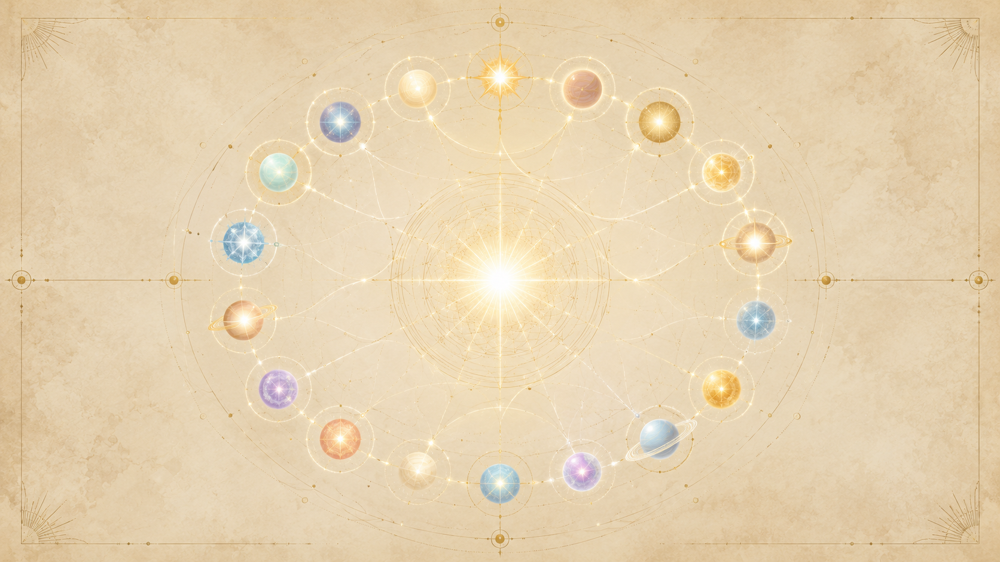

行星聯邦是什麼:服務無限造物者的正向聯盟
「我是『服務無限造物者之行星聯邦』的成員之一。」

當提問者一開始問起那些 UFO 存有的身分,Ra 給的自我介紹是:「我是『服務無限造物者之行星聯邦』(Confederation of Planets in the Service of the Infinite Creator)的成員之一。」這是整套教材裡「行星聯邦」第一次正式登場——它不是某個單一的星球或種族,而是一個橫跨眾多文明、把彼此盟結在一起的高密度集合體。
聯邦的本質是「正向」(服務他人)、是「合一」取向的。它之所以叫「聯邦」(Confederation),關鍵不在於成員相像,而在於它們雖然各不相同,卻為了同一件事結盟。Ra 親口點明這層意思:「它是一個真正的聯邦,因為它的成員彼此並不相像,而是依循合一法則在服務中結為盟友。」也就是說,聯邦的凝聚力不是來自同質,而是來自一個共同的取向——服務,以及對「一」的認識。
後面整章會看到,這個「服務」並非主動介入式的拯救。聯邦受到自由意志的嚴格約束,它能做的、願意做的,是在不違反任何存有自由意志的前提下「回應呼喚」、輻射愛與光、並在被允許時以訊息與顯像來協助地球。它與本書另一條主線「兩條道路」直接相扣:聯邦是正向(服務他人)那一極在我們這個區域的集體化身,而它的對手——獵戶集團——則是負向(服務自己)那一極的集體化身。
全名與成員:約五十三個文明、五百個行星意識複合體
全名的由來
聯邦的正式全名是「服務無限造物者之行星聯邦」。Ra 特別說明,這個名字其實是個簡化:「我們稱自己為『服務無限造物者之行星聯邦』。這是一個簡化,目的是減輕你們族人在理解上的困難。」換句話說,這個名稱是為了讓三密度的人類能抓住概念而設的方便說法,並非聯邦自身在更高層次上對自己的全部理解。
數字:約 53 個文明、約 500 個行星意識複合體
關於規模,Ra 給了相當具體的數字:「在這個聯邦中,大約有五十三個文明,包含大約五百個行星意識複合體(planetary consciousness complexes)。」這是聯邦最常被引用的兩個數字——五十三、五百。
成員的來源橫跨多個層面,Ra 列了三類:「這個聯邦包含那些來自你們自己星球、已達到超越你們第三密度之維度的存有;它包含你們太陽系內的行星存有;它也包含來自其他星系的行星存有。」也就是說,聯邦裡既有「地球出身、已畢業升密度」的存有,也有同太陽系的、還有來自遙遠星系的——是一個跨星系的盟邦,而不是單一文明的擴張。
運作範圍:橫跨七個「星系」
提問者問起聯邦的覆蓋範圍。Ra 說這個聯邦「與你們七個星系(galaxies)的行星球體一起工作」(這裡 Ra 用的「galaxy」指的是像地球太陽這樣以恆星為中心的星系),並「對這些星系各密度的呼喚負責」。提問者注意到五百個行星聽起來不算多,Ra 的回答點出了更大的圖景:「有許多個聯邦。」我們所認識的這個聯邦,只是宇宙中眾多聯邦的其中之一,各自負責不同的區域;五百這個數字之所以顯得小,正是因為它只是整體的一小部分。
成員都是「社會記憶複合體」
聯邦的成員不是個體,而是「社會記憶複合體」(social memory complex)——也就是已經成熟到能作為「一個存有」共同思考、共同記憶的整個文明。Ra 說各個聯邦都是由「專門化的個別社會記憶複合體」所組成,每一個都帶著自己獨特的服務扭曲(distortion of service),共同服務那位唯一的造物者。後面談「宗旨與運作」時會看到,正是這種「社會記憶複合體」的成熟度,讓聯邦能把彼此的資料匯入一個共享的中央思維。
宗旨與運作:共享的中央思維複合體
聯邦如何形成:服務之欲變成壓倒性的目標
提問者問聯邦是怎麼形成的。Ra 描述的不是某次政治締約,而是一種自然的匯流:當一個社會記憶複合體成熟到某個程度,「服務的渴望開始成為這個社會記憶複合體一個壓倒性的目標」。帶著共同「服務他人」目標的各個行星存有,於是彼此尋找、自願結合。
核心機制:把資料匯入「人人可取用的中央思維複合體」
聯邦運作的關鍵,是一個共享的思想庫。Ra 說,這些群體「自願地把社會記憶複合體的資料,放進你們可以稱為一個『中央思維複合體』(central thought complex)的地方,供所有成員取用」。這個結構帶來的效果是:每個存有都能「在進行自身服務的同時,呼喚任何其他所需的理解,來增強自己的服務」。
這一點很重要——聯邦不是靠命令與階層運轉的。它沒有「總部下令、分部執行」這套東西;它是一個共享智慧的網絡,每個成員仍做自己的事,但隨時可以調用整個聯邦累積的理解。這與後面要談的獵戶集團那種「啄食順序、不容質疑的服從」形成尖銳對比:聯邦靠的是共振與自願,獵戶靠的是征服與支配。
各聯邦以「不同的服務扭曲」服務同一位造物者
Ra 也把聯邦放進更大的脈絡:所有的聯邦,都是在服務那唯一的造物者,只是「透過這份服務的各種扭曲」去做。每個聯邦、每個成員,各自帶著獨特的服務樣態(Ra 稱之為「扭曲」,在一的法則裡這是中性詞,指偏離了無分別的「一」而顯化出的個別形式),但方向都指向同一個源頭。聯邦的多樣,服務的是合一。
隔離/檢疫地球:守護者與「窗口」
守護者守的是「自由意志」
地球被一張隔離(檢疫)之網保護著,執行者是「守護者」(Guardians)。Ra 把守護者的職責講得很清楚:「守護者守護的是這個行星球體上第三密度心/身/靈複合體的自由意志扭曲。那些需要啟動隔離的事件,曾經干擾了這份自由意志扭曲。」也就是說,隔離不是為了把人類關起來,而是為了擋住那些會侵犯人類自由意志的外來干擾——讓地球上的存有能在不被外力強行影響的情況下,自己做出抉擇。
守護者如何執行:以造物者之名致意,沐浴在愛/光中
守護者的執法方式本身就是正向的。當有實體接近地球,守護者會以光體的形態、以那唯一無限造物者之名向它致意;對方一旦被沐浴在這份愛/光之中,就會基於自身的自由意志而遵守隔離。Ra 強調這裡並沒有「對抗」這回事——遵守隔離是一種自然的回應,而非被武力逼迫。對於想硬闖的存有,結果就像 Ra 所形容的:不遵守隔離,等於你走路撞進一面堅固的磚牆卻不肯停下來。隔離不是一道需要交火的防線,而是一道光的牆;違逆它的代價是自身極性的流失,而不是被擊退。
「窗口」現象:唯一的縫隙,而且沒人握有那個時鐘
那麼負向存有究竟怎麼還是滲進來了?答案是「窗口」(windows)。Ra 說明:「窗口現象是來自守護者的一種『他我』現象。它運作於空間/時間之外的維度,在你們可稱為『智能能量』的領域。就像你們的週期一樣,這種平衡、這種節律,如同一座時鐘在報時。但在窗口的情況裡,沒有任何存有握有那座時鐘。因此它看起來是隨機的。」
換句話說,窗口是一段段稀少、不可預測的時空縫隙,負向存有只能趁這些縫隙穿透隔離。它的開闔有其節律,卻不受任何一方掌控,所以對所有人來說都像是隨機的。Ra 進一步說明窗口的用意是「平衡」:「這份平衡允許正向與負向的影響等量地流入,而這又由社會複合體的心/身/靈扭曲來加以平衡。」也就是說,連負向得以滲透這件事,本身都被納入一個維持自由意志、維持正負平衡的更大設計裡。
為何只能「回應呼喚」:自由意志的鐵律
「在聯邦中住著一些行星存有,它們從自己的行星球體出發,別的什麼都不做,只把愛與光當作純粹的流注,送給那些呼喚的人。」
服務的形式:純粹而無分別的愛之流注
提問者問,聯邦究竟怎麼把愛與光送給呼喚者。Ra 的回答是:「在聯邦中住著一些行星存有,它們從自己的行星球體出發,別的什麼都不做,只把愛與光當作純粹的流注(pure streamings),送給那些呼喚的人。」而且 Ra 澄清,這份傳送「不是以概念性思想的形式,而是純粹而無分別的愛」。聯邦最基礎的服務,不是給答案、給技術,而是持續輻射愛本身。
為何「呼喚」是前提:服務量等於「呼喚的平方」
聯邦不能主動上門,因為那會侵犯自由意志。它能提供的服務量,被一條公式般的原則框住。Ra 說:「我們能提供給呼喚我們的人的服務,等同於『那聲呼喚之扭曲/需求的平方』,再除以、或整合進那基本的合一法則——而合一法則的扭曲,標示著那些尚未覺察到創造之合一者的自由意志。」
提問者追問這個「平方」怎麼算,Ra 解釋它是「序列性的平方」:「一、二、三、四,每一個都被下一個數字平方。」以十個存有呼喚為例:「我們會把一連續平方十次,把這個數字升到第十次方。」結果大約是 1012;Ra 補充:「呼喚的存有有時並非完全統一在它們的呼喚之中,因此平方的結果會略小一些。」這個機制的意義是:呼喚的力量會被巨幅放大——少數人真誠一致的呼喚,就能召來遠超人數比例的回應。
當下被呼喚的人數
Ra 也給了當時的數字。就 Ra 個人而言,「被個別地呼喚」的人數是「三十五萬二千」;而整個聯邦,「在它全光譜的存有複合體中,被你們六億三千二百萬個心/身/靈複合體所呼喚」。這些數字側面說明了:呼喚一直在發生,而聯邦的回應量就被這些呼喚的數量與純度所決定。
但「開放接觸」要的不是人數,而是「全體共識」
值得分清的是:回應呼喚,跟「公開現身、走進人群」是兩回事。Ra 特別澄清:「我們不是用呼喚的數量來計算前來你們族人之間的可能性,而是用『一整個社會記憶複合體的共識』——一個已經覺察到萬物之無限意識的社會記憶複合體。在你們族人中,這只在零星的個例裡曾經發生過。」也就是說,單靠很多人呼喚並不足以讓聯邦公開降臨;那需要整個人類社會達成「覺察到無限意識」的共識,而這個門檻人類至今幾乎沒跨過。
與獵戶集團的對抗:思想之戰與「僵局」
獵戶的目的:趕在文明成熟前征服它
聯邦在我們這區的對手是「獵戶集團」(Orion group),代表負向(服務自己)那一極。獵戶的「十字軍」目標明確:趕在各行星的社會複合體達到「社會記憶」階段之前,前去征服它們。它們的手法是「發出訊息」、「與那些取向為服務自己的存有接觸」,建立菁英、奴役被視為較低劣者,再併入帝國。
四密度之戰:為何偏偏是四密度交戰
聯邦與獵戶的直接對抗,主要發生在第四密度,而且形式是「思想之戰」。Ra 說:「在任何一個時間點,只有四個行星存有被請求參與這場衝突」,而這四個是「愛之密度(第四密度)的,數目為四」。
為什麼是四密度出手?Ra 給的理由很關鍵:「第四密度是除了你們(第三密度)之外,唯一一個因為缺乏『克制不戰』的智慧,而仍看見戰鬥之必要的密度。」因此被派上場的是「第四密度的社會記憶複合體」。換句話說,正是因為四密度還沒發展出五、六密度那種「不必交戰」的智慧,它才會、也才能參與這種對抗。
更高密度為何不參戰
Ra 把各密度的立場分得很清楚:「第五與第六密度的正向存有不會參與這場戰鬥。第五密度的負向存有也不會參與這場戰鬥。因此,是雙方取向的『第四密度』加入了這場衝突。」越往高處,越不以「戰鬥」這種分離的方式運作——這本身就呼應了正向道路「慈悲須以智慧調節」的功課。
「僵局」:雙方都耗損,卻誰也贏不了
這場思想之戰的結果是一場僵局。Ra 描述其動態:「獵戶集團以『充電』或『攻擊』前來,聯邦則以『光』來武裝。結果,就是你們所謂的『僵局』(stand-off)——雙方的能量都因此而有所耗損,都需要重整;負向因『操縱失敗』而耗損,正向因『無法接納所給予之物』而耗損。」
提問者問這場衝突是否有成果,Ra 的回答近乎否定:「對任何一方都不是有成效的。唯一有幫助的後果,是平衡了這顆行星可取用的能量。」也就是說,正向與負向的長期拉鋸,真正的價值不在於誰勝誰負,而在於它為地球維持了一種正負能量的平衡。這也與前面「窗口」那節相扣——對抗本身被收納進「維持平衡」的更大設計裡。
聯邦如何傳訊:通靈、UFO,以及為何訊息常被扭曲
兩種接觸:思想形態與飛行器
聯邦目前以兩種方式現身。其一是「飛行器」——Ra 提到「目前有七個(成員)正以飛行器在你們的密度中運作」,它們的目的「非常單純:讓你們星球的存有覺察到『無限』,而對未受教者而言,這往往最好以『神祕』或『未知』來表達」。其二是「思想形態」(thought-form)接觸,以及通靈傳訊;Ra 指出,1962 年「被接觸的群體就是聯邦」,當時用的是「一個思想形態」,而非實體飛行器。
為何要用「神祕」的方式
聯邦刻意不提供「證明」。Ra 說明,土星議會並未為了住進人群而打破隔離;聯邦獲得的許可,是「以思想形態的形式,向那些『有眼能看見』的人顯現」。在人類第一個核子裝置被開發與使用的時/空,聯邦被允許「以一種能引發『神祕』的方式,來服事你們的族人」。重點始終是「引發神祕、激起追問」,而不是給出鐵證——因為鐵證會剝奪人們自己去尋求、自己去呼喚的自由意志。
為何訊息常被扭曲:覺察混雜,以及獵戶的污染
聯邦的訊息之所以常被扭曲,有兩層原因。第一層是地球本身的處境。提問者點出接觸地球的根本困難——人群中「有些人覺察到合一,有些人沒有」,Ra 確認正是如此:這種覺察的混雜,使得公開接觸或提供證明都無法進行。要讓服務最大化,得先整合「你們社會記憶複合體中,處於『虛幻的瓦解形態』的所有部分」,而這個整合尚未完成。
第二層是獵戶的主動污染。Ra 描述了一個殘酷的機制:當一個取向為「服務他人」的通靈管道,開始去尋求「證明」時,「十字軍……便能夠中和這個管道的有效性」——手法是餵給它「說謊的資訊」(lying information)。獵戶也用「心電感應」散播「帶著『服務自己』扭曲的合一法則哲學」,並把「儀式與練習」寫下來流傳。所以同樣打著「合一法則」「光的存有」旗號的訊息,有的純淨、有的已被負向滲透扭曲——分辨的關鍵不在於名號,而在於內容是導向合一,還是導向分離與控制。
但 Ra 也給了一條保護原則:接觸最終仍受制於自由意志與動機的純度。「若以光/愛提出請求,合一法則將以默許回應之。」一個真誠、不索求證明、只願服務的呼喚,本身就構成對負向污染的最佳屏障。
土星議會:九位成員與二十四位守護者
它在哪裡
聯邦對地球事務的決策,由「土星議會」(Council of Saturn)負責。提問者問起它的所在,Ra 說:「這個議會位於土星這顆行星的八度音程、或第八維度,佔據一個你們以三維詞彙理解為『環』的區域。」也就是說,它在土星環所對應的高維位置上「持續開會」,並守護地球、監督聯邦成員的跨維度造訪。
它有多少成員:九位,而非五十四
關於議會的人數,Ra 給的是一個明確的數字——九。「在數目上,這個持續開會的議會——儘管它的成員會因為某種不定期發生的『平衡』而有所變動——是九。」(這裡需要更正一個常見說法:議會的核心是「九」位成員,材料中並沒有「五十四」這個數字。)這九位成員透過心電感應彼此相連:「與這九的『一體』或『合一』進行心電感應接觸,各種扭曲和諧地交融,使合一法則得以輕易地盛行。」
二十四位守護者
在這九位之外,還有一層後援。Ra 說:「為了支援這個議會,有二十四個存有,依請求提供它們的服務。這些存有忠實地守望,並被稱為『守護者』(Guardians)。」前面談隔離與窗口時所說的守護者,正是這二十四位——它們執行隔離、以造物者之名向接近者致意、並掌管那些隨機的「窗口」。土星議會(九)負責審議與決策,守護者(二十四)負責守望與執行,兩者共同維繫對地球的檢疫與自由意志的保護。
議會如何決定「解除隔離」
當聯邦想對地球做某件事,流程是向議會提交計畫。Ra 說:「如果它被批准,隔離就會被解除。」但 Ra 也強調一個重要區別:議會並沒有為了「住在人類之中」而打破隔離;它批准的,僅限於「以思想形態的形式,向那些有眼能看見的人顯現」這種程度。隔離的解除是高度節制的——它服務的是引發覺察,而不是直接介入。
Ra 在聯邦中的角色:一個謙卑的成員
說出整套教材的 Ra,自己就是聯邦的一員——而且 Ra 反覆強調自己只是「謙卑的成員」。Ra 描述自己這個群體的特殊身分:「我們不是那些屬於『愛(第四密度)』的,也不是那些屬於『光(第五密度)』的。我們是那些屬於『合一法則』的。」Ra 是來自第六密度的社會記憶複合體,在聯邦中以教導合一法則為其服務。
Ra 也清楚說明自己與這位器皿(卡拉)及這個通靈團體接觸的目的:回應地球的呼喚,把因歷史扭曲而失真的合一法則重新校正。Ra 把這份工作視為一種「巨大的責任」,並表示「我們將持續做這件事,直到你們的——容我說——週期被妥當地結束為止」。也就是說,Ra 此刻透過卡拉傳訊,本身就是聯邦「回應呼喚」原則的一次具體實踐:它不是主動降臨說教,而是因為這個團體真誠地呼喚、尋求服務而前來。
聯邦與宗教、歷史:被扭曲的合一法則
Ra 曾走在地球上,接觸埃及
聯邦與人類歷史最具體的交會,是 Ra 自己與古埃及的接觸。Ra 說:「我們作為一個群體,或你們所謂的社會記憶複合體,曾與你們星球上一個你們稱為『埃及人』的種族接觸。」Ra 也確認自己曾親身臨在:「我們曾走在你們的地球上。我們曾見過你們族人的面孔。」與此同時,Ra 提到「我們密度中的其他存有,在同一時間於南美洲接觸,而那些所謂的『失落之城』,就是它們對合一法則所作的貢獻嘗試」。
教導如何被扭曲成宗教
Ra 講述了一個令它深感責任的失敗。它本想單純地傳遞合一法則:「我們對一位聽見、理解、並且有能力頒布合一法則的人說話。然而,那個時代的祭司與人民,很快就扭曲了我們的訊息,剝奪了——容我說——那份合一在本質上所內含的『慈悲』。」純粹的「一」,被人為地架構成階層化的、崇拜式的宗教(歷史上對應到埃及的太陽崇拜等形式),失去了它原有的、平等而慈悲的內核。
Ra 為何留下來
正因為這次扭曲,Ra 選擇繼續承擔。它從那個被扭曲的脈絡中撤離後,「感到一份巨大的責任,要持續地去移除那些被加諸於合一法則之上的扭曲與權力」。這段歷史說明了聯邦與宗教關係的核心張力:聯邦帶來的原本是「合一」這個簡單而慈悲的真理,但只要它落入三密度尚未準備好的心智與權力結構,就極容易被扭曲成它的反面——階層、崇拜、控制。這也回頭解釋了聯邦為何如此堅持「回應呼喚、不給證明、以神祕示人」:任何過度直接的介入,歷史已經證明,都可能反被扭曲成新的枷鎖。